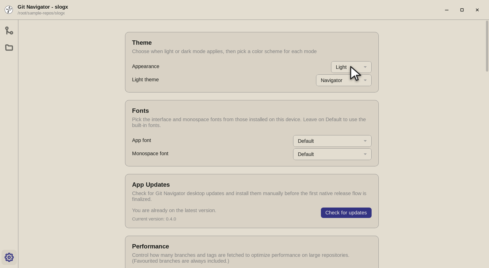
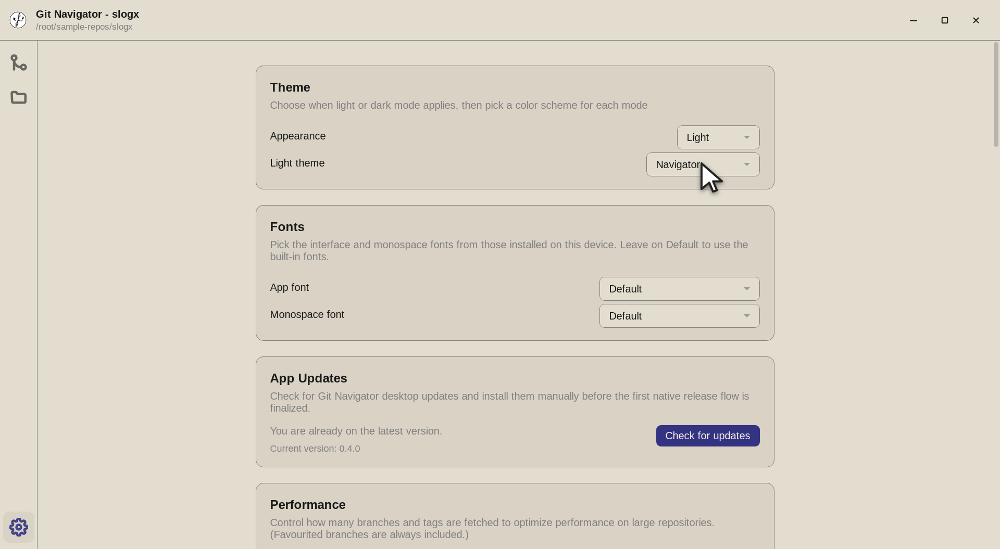
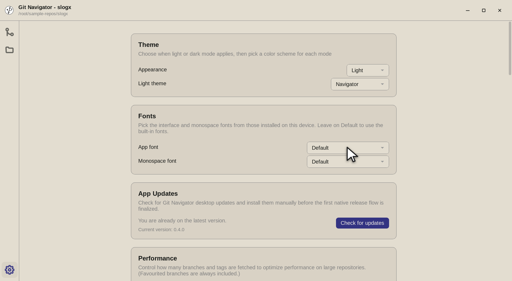

Make it look the way you think
The Git Navigator desktop app puts appearance in your hands: choose when light or dark mode applies, pick a color scheme for each mode independently, and set the interface and monospace fonts from those installed on your device.

What you can customize
Light and dark, decided separately
Choose Follow OS, Light, or Dark for when each mode applies — then pick a distinct color scheme for light and for dark, so switching modes never forces a palette you dislike.
Swappable color schemes
Ship with a warm default navigator palette, a GitHub Primer scheme, and other popular schemes. Only the selector relevant to your current appearance is shown, and schemes are listed alphabetically.
Your interface and code fonts
Set the application font and the monospace (code/diff) font from the fonts installed on your device, or leave either on Default to use the built-in faces. If no device fonts are detected, the app says so instead of offering an empty list.
Honest about what it bundles
Settings includes third-party license disclosures, with the full license text for the bundled themes — so the appearance you pick is fully accounted for.
Personalizing the desktop app
-
Step 1. Open Settings and the Theme card comes first. The Appearance selector decides when light or dark mode applies — Follow OS, Light, or Dark. -

Step 2. Below it, pick a color scheme for each mode independently. Only the selector for your current appearance is shown; schemes such as the default navigator palette and GitHub Primer are listed alphabetically. -

Step 3. The Fonts card sets the interface and monospace fonts from those installed on your device. Leave either on Default to use the built-in faces — the monospace choice drives the graph, diffs, and file views.
Set it up in three moves
- Open Settings. Click the gear icon at the bottom of the activity rail to open the Settings activity in the desktop app.
- Pick appearance, then schemes. Choose when light/dark applies in the Theme card, then select a color scheme for each mode. The change applies immediately.
- Choose your fonts. In the Fonts card, set the app and monospace fonts from your installed faces, or keep the built-in defaults.
Frequently asked questions
Can I use a different color scheme for light and dark mode?
Yes. Appearance and color scheme are separate choices: you decide when light or dark applies, then pick a distinct scheme for each mode. Git Navigator only shows the scheme selector relevant to your current appearance.
Which color schemes are available?
A warm default "navigator" palette, a GitHub Primer scheme, and other popular schemes, selectable independently from light/dark mode. Schemes are sorted alphabetically in the selector, and the full license text for bundled themes is disclosed in Settings.
Can I change the font Git Navigator uses?
Yes — both the application font and the monospace font are configurable from the fonts installed on your device. Leave either on Default to use the built-in faces. The monospace font is what the commit graph, diffs, and file views render with.
What if no fonts are detected on my machine?
The Fonts card falls back to the built-in defaults and shows a note explaining that no device fonts were detected, rather than presenting an empty selector.
Is appearance customization in the VS Code extension too?
The color-scheme and font controls are part of the standalone desktop app. In the VS Code extension, Git Navigator follows your editor theme so it stays consistent with the rest of VS Code.